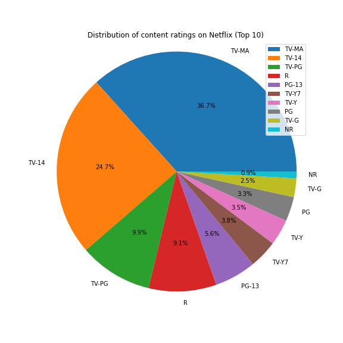

Netflix Data Analysis
Netflix Data Analysis Overview
The Netflix Data Analysis aims to provide insights into the streaming service's performance and user behavior. The analysis examines various aspects such as content trends, user engagement, and market competition.
Key findings from the analysis include:
- Analysis of popular genres and trends in content consumption.
- Evaluation of user viewing patterns, including binge-watching behavior and preferred viewing times.
- Assessment of subscriber growth and retention rates over time.
- Comparison of content performance and user engagement metrics across different regions.
Visualizations
Distribution of content ratings on Netflix

top 5 directors
Trend of Content Produced on Netfilx Every Year
Relation between Type and Rating of Movies and Shows
Number of Content per Different Type
Most Titles Produced Country
Top 5 Most Popular Ratings on Netflix
Top 5 Most Popular Gendres on Netflix
Top 5 Actor on Netflix
Top 5 Years in Number of Titles Released